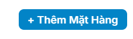
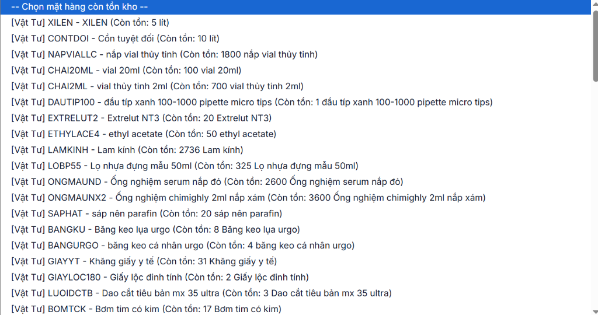

• KIỂM TRA TỒN KHO THỜI GIAN THỰC: Hệ thống chỉ hiển thị những vật tư thực tế còn trong kho kèm số lượng tồn khả dụng, tránh tình trạng đề xuất nhưng kho đã hết.
• TRUY CẬP ĐƯỢC TRÊN MỌI THIẾT BỊ: Máy tính bàn cơ quan, Laptop cá nhân hoặc Điện thoại thông minh (hỗ trợ cả Android & iOS).
• ĐƯỜNG DẪN TRUY CẬP HỆ THỐNG:
https://app-nhap-kho-uozl.vercel.app
Bước 1: Mở liên kết hệ thống và chọn nút "Đăng Ký Lãnh Vật Tư & VPP"
1. Dùng trình duyệt web (Google Chrome, Cốc Cốc, Microsoft Edge, Safari...) truy cập vào địa chỉ: https://app-nhap-kho-uozl.vercel.app
2. Tại màn hình khóa bảo vệ, BỎ QUA Ô NHẬP MẬT KHẨU CỦA THỦ KHO. Bạn chỉ cần nhấp trực tiếp vào nút màu xanh ngọc: 📝 Khoa / Phòng Đăng Ký Lãnh Vật Tư & VPP (nằm ngay phía dưới nút mở khóa).


Bước 2: Chọn Kho, Khoa / Phòng đề xuất và điền thông tin người lập
Cửa sổ "Phiếu Đăng Ký Đề Xuất Lãnh Vật Tư & Văn Phòng Phẩm" sẽ mở lên. Cán bộ vui lòng điền các thông tin hành chính:
- Xin Lãnh Tại Kho: Mặc định chọn "Tất Cả Các Kho", hoặc bạn có thể chọn lọc riêng theo "Kho Văn Phòng Phẩm" hoặc "Kho Vật Tư & Hóa Chất".
- Khoa / Phòng Đề Xuất (*): Nhấp chọn đúng tên đơn vị của mình (ví dụ: Khoa Giám định, Khoa Hóa pháp, Khoa Xét nghiệm ADN, Khoa Giải phẫu bệnh, Phòng TC-HC-QT, Phòng KH-TC...).
- Họ & Tên Người Đề Xuất (*): Nhập đầy đủ họ tên cán bộ trực tiếp xin lãnh (để Thủ kho tiện liên hệ bàn giao).
- Ngày Đề Xuất (*): Hệ thống tự động điền sẵn ngày hiện tại.
- Lý Do / Mục Đích Sử Dụng: Ghi vắn tắt mục đích công tác (ví dụ: Phục vụ công tác giám định độc chất Quý 4, phục vụ công tác văn phòng thường quy, phẫu nghiệm tử thi...).

Bước 3: Chọn mặt hàng cần lãnh và nhập số lượng
Hệ thống hỗ trợ cơ chế kiểm soát tồn kho tự động nhằm tiết kiệm thời gian cho các Khoa / Phòng:
1. Nhấp vào nút + Thêm Mặt Hàng (Hình 4) để thêm dòng vật tư cần xin.

2. Tại cột "Mặt Hàng Xin Lãnh", nhấp vào ô danh sách lựa chọn. Hệ thống chỉ liệt kê những mặt hàng ĐANG THỰC SỰ CÒN TỒN TRONG KHO, hiển thị kèm mã số và số lượng tồn khả dụng (Hình 5).

- Số lượng xin: Nhập số lượng thực tế đơn vị cần sử dụng (hệ thống sẽ tự động hiển thị đơn vị tính chuẩn như: lít, lọ, ống, cái, cuộn, ram...).
- Ghi chú: Điền yêu cầu cụ thể nếu có (ví dụ: Lấy loại nắp đỏ, dung tích 2.5L, đóng gói theo bộ...).
- Thêm nhiều món: Tiếp tục bấm nút + Thêm Mặt Hàng nếu cần xin nhiều loại vật tư khác nhau trong một lần lập phiếu.
- Xóa dòng nhầm: Nếu bấm dư hoặc chọn nhầm, nhấn vào nút dấu nhân màu đỏ [ ✕ ] ở cột ngoài cùng bên phải để xóa dòng.
Bước 4: Kiểm tra tổng kết và Gửi phiếu đề xuất
1. Nhìn xuống chân phiếu để kiểm tra lại Tổng Mặt Hàng Xin Lãnh và Tổng Số Lượng đề xuất.
2. Nhấp vào nút màu xanh ngọc đậm: 📨 GỬI PHIẾU ĐỀ XUẤT LÃNH HÀNG.
3. Hệ thống sẽ hiển thị thông báo thành công: "Đã gửi phiếu đề xuất thành công!". Dữ liệu đề xuất sẽ được lưu tức thì lên hệ thống đám mây Supabase Cloud và chuyển trực tiếp tới tài khoản quản trị của Thủ kho.
• Vật tư/hóa chất sẽ được chuẩn bị sẵn tại kho.
• Cán bộ đại diện Khoa / Phòng chỉ cần đến kho kiểm tra thực tế, ký nhận vào Phiếu Xuất Kho và nhận hàng nhanh chóng (tiết kiệm đến 80% thời gian chờ đợi).